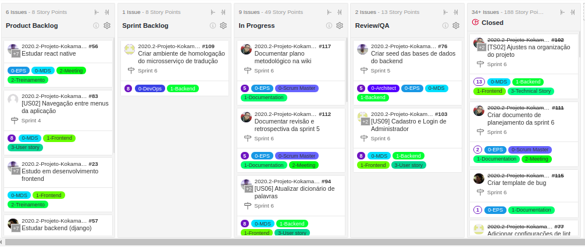

Plano metodológico
Histórico de revisão
| Data | Autor | Modificações | Versão |
|---|---|---|---|
| 23/03/2021 | Welison Regis | Adiciona Plano metodológico da equipe | 1.0 |
Introdução
O presente documento visa descrever o plano metodológico utilizado no desenvolvimento do Projeto Kokama, além de detalhar as técnicas e as metodologias aplicadas durante a elaboração do projeto. Utiliza-se de conceitos e práticas de múltiplas metodologias de modo a fazer uma adaptação ao contexto do trabalho.
Papéis
Na situação do projeto, os papéis são definidos de acordo com a metodologia Scrum e com base nos requisitos da disciplina, sendo que cada membro tem responsabilidades e compromissos conforme definido no documento de Roadmap de papéis.
Na análise de risco do projeto, definiu-se que a priori não ocorrerão rotações de papéis durante o curso do semestre de modo que fique livre ao time essa possibilidade futuramente, caso a maturidade da equipe, o custo, o escopo e o tempo proporcione essa experiência.
Metodologias
Scrum
No Projeto Kokama, adota-se elementos metodológicos do scrum com encontros definidos no Plano de Comunicaçao, que utilizam como base o Quadro de Disponibilidade para decisão dos horários. Utiliza-se principalmente os seguintes artefatos do Scrum 2:
- Sprint: período de tempo durante o qual é produzida uma versão incremental do produto. No projeto, uma sprint possui 7 dias;
- Daily: acompanhamento diário do desenvolvimento da sprint de modo a identificar o que foi feito, o que será feito e as dificuldades a fim de mitigar e prevenir riscos. No projeto, a daily ocorre durante um período de 15 minutos;
- Revisão de sprint: reunião para validar o incremento do produto produzido na sprint atual e adaptar o backlog do produto (se necessário). No projeto, a revisão dura até 1 hora e a documentação segue o modelo de revisão definido nas sprints. Ademais, realiza-se uma reunião de revisão mais curta com a dona do produto para validação do que foi desenvolvido na sprint;
- Retrospectiva da Sprint: momento da equipe inspecionar a si própria de modo a criar um plano para melhorias a serem aplicadas na próxima sprint. No projeto, a retrospectiva dura até 1 hora e a documentação segue o modelo de retrospectiva definido nas sprints. Ademais, levanta-se em reunião mais curta com a dona do produto quais os pontos positivos e os pontos de melhoria dos entregáveis da sprint;
- Planejamento da Sprint: com a colaboração de todos os papéis, define-se nessa etapa o trabalho a ser realizado na nova sprint. No projeto, o processo de planejamento dura até 2 horas e leva em consideração artefatos, objetivos e priorizações trazidos nas reuniões com a dona do produto. Define-se histórias de usuários e tarefas que serão desenvolvidas nas novas sprints levando em consideração a aprendizagem das últimas semanas. O documento de planejamento da sprint é criado automaticamente através de scripts desenvolvido pela equipe.
- Planning Poker: define-se no planejamento da sprint a estimativa de pontos (fibonnaci) dos artefatos que serão desenvolvidos na sprint em relação a medida de esforço, complexidade e risco.
Kanban
Para monitorar o trabalho da equipe, utiliza-se a metodologia Kanban através da ferramenta ZenHub integrada às issues do GitHub 4. Nesse sentido, definiu-se um fluxo de trabalho dividido em cinco etapas: product backlog, sprint backlog, in progress, review/QA e closed.
- Ferramenta ZenHub 3: auxilia na geração de relatórios de métricas do desenvolvimento das sprints, além de realizar a integração entre os diferentes repositórios do projeto dentro da organização. Pode-se ver o fluxo de trabalho na imagem abaixo.
- Categorização (labels): os artefatos presentes no fluxo do Kanban são categorizados com os rótulos "0-Papel", "1-Tecnologias", "2-Treinamento e Encontros" e "3-US/TS".

Extremming Programming (codificação)
No projeto, adotou-se metodologias do Extremming Programming (XP) no processo de desenvolvimento de código, como pode-se citar: programação em pares, refatorações (se aplicável), integração contínua e feedback constante, tanto da parte interessada do projeto como da equipe de desenvolvimento e gerência2.
No projeto, adota-se os pares de programação conforme expertise dos membros relativo a tecnologia, metodologia, entregas, entre outros fatores, de modo a homogeneizar o conhecimento e melhorar as entregas no contexto da equipe.
Métricas de gerenciamento
O projeto utiliza como métricas de gerenciamento os seguintes recursos:
- Burndown: gráfico que mostra como o projeto está andando ao longo de um périodo de tempo de modo a auxilar no planejamento das entregas das sprints.
- Velocity: gráfico elaborado com base na pontuação das histórias finalizadas em um determinado período de tempo, no caso do projeto as sprints semanais. A acurária do velocity da equipe evolui com o tempo e, após estabilizado, é uma ótima métrica para o planejamento das atividades das sprints.
- Cumulative flow: gráfico que indica como tem se dado o fluxo de entrega de atividades da equipe ao longo do tempo, conforme marcos (divisões) definidos no Kanban. O cumulative flow tem por objetivo realizar o acompanhamento e melhoria no processo de entrega contínua por parte da equipe, além de ajudar no acompanhamento da quantidade de trabalho presente em cada etapa do Kanban.
- Quadro de Conhecimentos: representação visual do acompanhamento da evolução da aprendizagem em relação a tecnologias e metodologias adotadas pelo projeto. Tem como objetivo manter o rastreamento sobre os pontos de falhas na aprendizagem dos integrantes da equipe.
- Tempo gasto por sprint: representação visual do tempo gasto por sprint por parte da equipe de Métodos de Desenvolvimento de Software e Engenharia de Produto de Software. Além de estar relacionada ao custo do projeto, essa métrica visa acompanhar e melhorar a organização e a eficiência do tempo gasto nas atividades por parte dos membros da equipe.
Pode-se verificar um exemplo de aplicação das métricas nas sprints.
Comunicação
A comunicação da equipe ocorre conforme definido no Plano de Comunicaçao, ademais, o grupo realiza reuniões conforme definido no texto acima, além de priorizações e validações de protótipo, produto e projeto com a dona do produto e as partes interessadas periodicamente.
Referências
-
BECK, Kent et al. Manifesto para Desenvolvimento Ágil de Software. 2001. Disponível em: https://agilemanifesto.org/iso/ptbr/manifesto.html. Acesso em: 23 mar. 2021. ↩
-
SCRUM e XP. 2013. Disponível em: https://www.desenvolvimentoagil.com.br/scrum/. Acesso em: 22 mar. 2021. ↩↩
-
RACASAN, Mariana. GitHub for Project Management - How to Organize and Track Your Agile Processes. Disponível em: https://blog.zenhub.com/how-to-use-github-agile-project-management/. Acesso em: 22 mar. 2021. ↩
-
FIRMINO, Júlia. O que é kanban e como ele pode ajudar na organização do trabalho. Disponível em: https://blog.runrun.it/o-que-e-kanban/. Acesso em: 23 mar. 2021. ↩